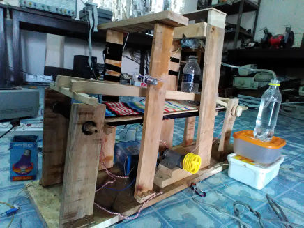
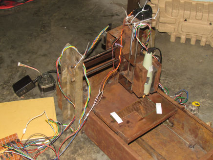
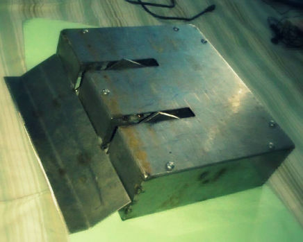

Embedded Wearable Device for Noninvasive Glycated Hemoglobin Estimation (2020)
Designed an embedded wearable device to measure the amount of glycated hemoglobin in blood noninvasively.
Mobile Camera based Fingertip DVP Signal Acquisition System (2019)
Developed an Android application to record 3-wavelength DIgital VOlume Pulse (DVP) signals directly from the mobile camera sensor.
Automated Bottle Filling System (2016)

Designed a conveyor system to transport and fill bottles with fluids, during undergraduate studies. The control system for this machine was designed based on Arduino and Siemens LOGO! PLC. [Project Link]
IR LED based Heart Rate Measurement device (2015)
Designed a low-cost Arduino-based photoplethysmograph device during undergraduate studies. It was designed to measure the blood flow in the reflection form. IR light was emitted from the soft-side of the fingertip and this signal was sensed using an IR sensor, separated about 3mm from the IR light generator in the same plane. [Project Link]
DESIGNING OF A CNC ROUTER FOR PCB DESIGN (2015)

Designed a 3-axis CNC router for PCB etching during undergraduate studies. Cassis modelled with steel sheets and used 3 servo motors to control the 3 axes. The servo motors were controlled by Arduino Due (32-bit ARM SAM microcontroller). And the CNC controller was developed using MATLAB which communicated with the microcontroller using USB serial ports. [Project Link]
4-WHEELER DIFFERENTIAL DRIVE COMBAT BOT WITH ACTIVE WEDGE (2014)

Designed a 4 wheeler combat bot having an active wedge to defeat other bots. [Project Link]
DEVELOPMENT OF “ARMADILLO GAME ENGINE” (2012 - PRESENT)
Developing a Game Engine named “Armadillo” in a team of 4 persons. This project is currently under development. This project is developed using C++, C# languages and OpenGL library along with other libraries.
PARALLEL PORT SCRIPTING LANGUAGE - “MICROSCRIPT” (2011)
Developed a scripting language to reduce hassle of C/C++ based programming and interfacing with some external devices. This scripting language had its own loop and conditional blocks. The runtime environment section is incomplete and now the project is deprecated. [Project Link]